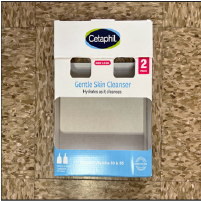
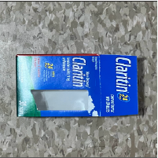
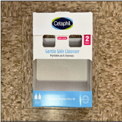
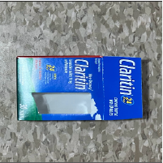

Trash of the Week is inspired by Netflix—specifically its documentaries. Among Netflix's host of many shows, movies, and dramas are assortments of documentaries. Some are about the ocean. Some are about crime. Others are about food, money, and media. The last set is my favorite because I find them the most relatable and educational about everyday life. They also tickled my brain every time because at least once was a mention of trickery. Everyone had some downfall hidden away through lack of regulation handling or otherwise as successful hiding often led to better market performance.
A few months ago, I watched Poison, a documentary that frames some of America's past large food-related disease outbreaks (e. Coli, for example) through gaps in regulatory standards and lack of space for waste. Oftentimes, the sources of those outbreaks could be traced back to some mismanagement of waste or improper surveillance of products. It made me question the realities behind my own trash and other elements in my life that relate to those series.
Thus, I am now documenting my trash every week for both myself and others to see. Hopefully, it can help me realize patterns in my lifestyle and ways I can improve things as I learn more about other cultures and ways to enjoy the things I do!
In all, this week taught me some lessons and reminded me of how much I regularly consume. Particularly, I eat a lot of yogurt. Every morning this week, I ate yogurt for breakfast as I did the weeks before. Thus, it again has a place in the gallery alongside the granola snacks I sometimes eat when my class schedule makes it more difficult to carry a full meal and take time to microwave it. In terms of the rest of the week, the first half went to Walmart while the other went to Costco. Particularly, my family's van battery died. Thus, I went to Walmart to get it replaced as it was still under warranty. However, as we bought it online, there was an error in the system that resulted in having to come back the day after. I did get a new battery ultimately! The old battery was given to Walmart to safely dispose of. In the later part of the first half of the week, I purchased Claritin for my mother, leading to the empty packaging photographed. Furthermore, as the week progressed and my family continued to consume the foods from the fridge, I went to Costco on Saturday to restock my yogurt and other food items needed for next week. That purchase resulted in the Cetaphil container photographed! I originally did not plan to buy it, but a sale was there and my mother agreed we needed more at home. Resupplying our fridge led to the remaining items; my family tends to recycle in bulk and thus search for any other items left behind that needed to be recycled. For example, the toothbrush and toothpaste container were disposed of because my mom noticed how worn the toothbrush was and how empty the toothpaste was. Thus, they joined the recycle pile that day.
Overall, the week held to be rather normal. My family's traditions for recycling and restocking remained the same, and thus most of the items photographed were expected, even if not a continuous Costco buy. The battery fiasco though was a surprise! It taught me not to purchase special items online. At the time it was necessary, but waiting then would have saved the unexpected complications that came with trying to enact the warranty. My yogurt consumption is nonetheless strong and perhaps the greatest constant of the week. I have noticed a slight increase in them, but that will remain a trend to explore in later weeks. Regarding the items themselves, this week's collection can be organized into three categories: Cyclic Buy, Cyclic Remove, and Lessons Learned.
Primarily, Cyclic Buys refer to the Costco items mentioned above, and thus fall under the same category as their disposal was expected due to routine consumption. The items themselves are varied. The yogurt cups, for example, are small, colorful, light, and smooth, making them easier to store and nice to hold. My most memorable moments with them are the happiness I feel in the morning when one of my preferred flavors is still yet to be taken from the fridge by someone else. The granola snack bag, in contrast, is larger and almost flimsy because it is now empty. It fulfills its purpose but is much more ignorable because its contents are more used than itself. Our most memorable moment with it was questioning the company's choice of containment, given the snacks are also wrapped besides being stored in this bag. Both nonetheless are thrown away because I needed to replace them with new ones and the products themselves are single-use. Given the Cetaphil bottle purchase was a surprise, the cardboard packaging was rougher than the other items but sturdier and thus was useful to carry items during my family's bulk recycle trip.
 


